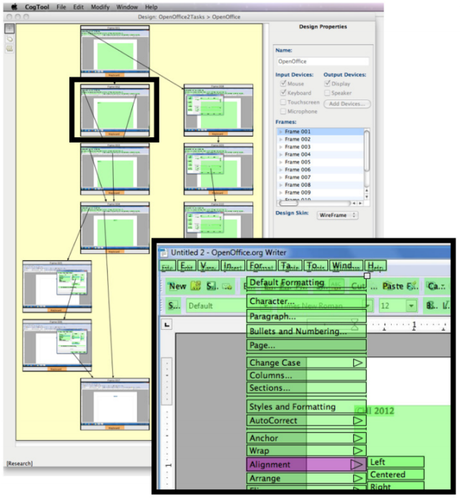

About
I am a fourth year Ph.D. student in Computer Science at the University of Washington, advised by Andy Ko and James Fogarty. For Summer 2018, I was at Google for a research internship with Yang Li. In the past, I interned at Adobe Research Creative Technologies Lab working with Wilmot Li, Mira Dontcheva, Joel Brandt, and Morgan Dixon, on Rewire, an interactive design tool to help UX designers reuse example screenshots. I also spent 3 years working as a software engineer and SDET at Microsoft, where I worked on a web interface framework for Dynamics AX.
I am interested in data-driven design, creating tools to help designers adapt examples and explore variations, and ways that we can enhance, improve, and make interfaces more accessible without having access to the original application source code. My projects have involved building interactive systems towards these interests that apply a variety of techniques including program analysis and synthesis, computer vision, machine learning, and pixel-based reverse engineering. Here is a link to my current CV
Current Research
Although the exploration of variations is a key part of interface design, current processes for creating variations are mostly manual. Scout system that helps designers explore many variations rapidly through mixed-initiative interaction with high-level constraints and design feedback. Scout allows designers to specfiy high-level constraints based on design concepts (e.g. emphasis). We have formalized several of these high-level constraints into their corresponding low-level spatial constraints to enable rapidly generating many designs through constraint solving and program synthesis.
Interface designers often use screenshot images of example designs as building blocks for new designs. Since images are unstructured and hard to edit, designers typically reconstruct screenshots with vector graphics tools in order to reuse or edit parts of the design. Unfortunately, this reconstruction process is tedious and slow. Rewire is an interactive system that helps designers leverage example screenshots. Rewire automatically infers a vector representation of screenshots where each UI component is a separate object with editable shape and style properties. Rewire provides three design assistance modes that help designers reuse or redraw components of the example design.
I created an abstract model of a command and a set of methods for reverse engineerings commands and command metadata from arbitrary web applications for the purposes of command monitoring and retargeting inputs to alternate modalities (e.g., Retargeting a web application built only for mouse input to have audio-controlled commands). The system uses JavaScript static and dynamic program analysis to discover commands and monitor their status, and is built in a Chrome Extension. I am working on creating an open source version of the tool and will be making it available soon (TBA).
Past Research
I built a system called CogTool-Helper that automatically infers a model of an interface and generates storyboards and cognitive models that allow UI designers to estimate human task performance in an interface. This system combines tools from software engineering for GUI testing (GUITAR) with CogTool, a system for human performance modeling.
